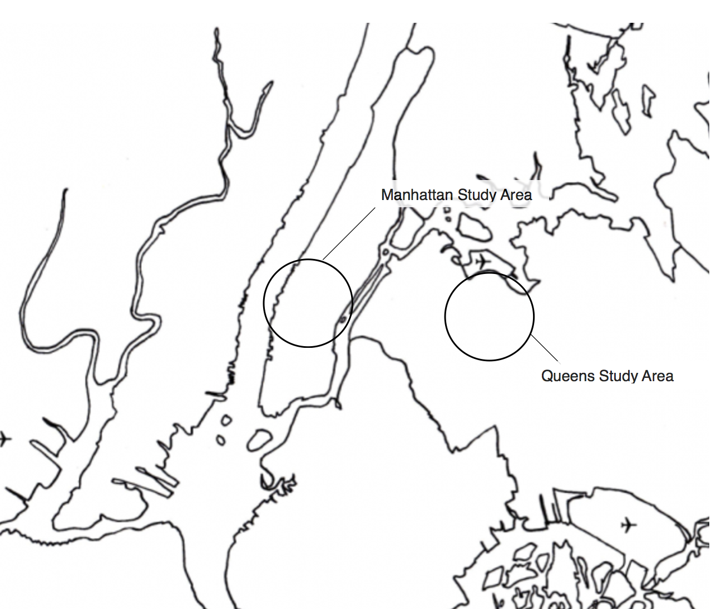
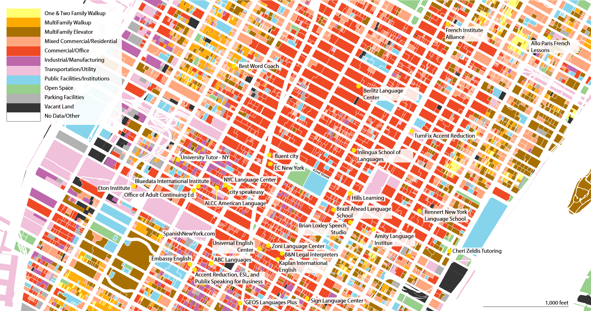
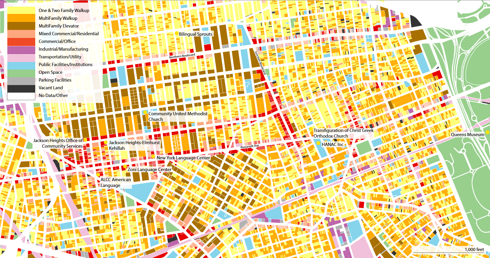

Introduction
This research explores the ways in which the New York City government legitimizes/de-legitimizes bilingualism in New York City through the legal categorization of language schools located in the Midtown, Manhattan and Corona, a neighborhood in Queens. The project identifies whether trends exist in the city's categorization of “language schools” on media the platforms Yelp, Foursquare and Google.
Legitimization of Bilingual Education in Midtown, Manhattan and Queens argues that as different land use labels, such as “commercial/office buildings” or “public facilities and institutions” or “mixed commercial residential”, does not empower educational institutions that foster bilingualism. Yelp was chosen as a case study because the data is not categorized via an algorithm about the business or by the business itself. Rather, it is created by Yelp users and “data creation teams.” This is pertinent to discovering if there is a relationship between the "language school" type categorizations and how the city government identifies these businesses. Methodology
In order to complete this research data was taken from Yelp, Google and Foursquare, found using the keywords “language school.” Quantitative NYC PLUTO land use data from the New York City Department of City Planning was also used. Additionally, on the ground fieldwork was conducted in neighborhoods in order to observe any language schools that were not found through the online search methods. The data that resulted from these collection methods is both quantitative and qualitative with both the quantitative geographic data and qualitative information about the types of schools and services on offer. A brief search for “language schools” in all of New York City calls 898 hits on Yelp, far more than may be visible walking the streets of the city, and not comprehensive when considering informal learning centers.
Information was gathered regarding the types of services that the schools offer, including “ESOL” (English as a Second or Other Language), “tutoring,” and “adult education.” The location of these language schools was mapped using ArcGIS and compared to PLUTO land uses to determine how the city categorizes these centers of learning. The neighborhoods of Corona and Midtown were selected based on the high concentration of language schools and the high population diversity, respectively. These factors could each present different arguments for formal and informal centers of learning.
Inspiration
This project emerged from questions posed by the article, ‘“Socials”¨ “poch@s” “normales” y Los Demos’ by Ana Celia Zentella, which explores the relationship between language and education.
The fact that the staff of the school in this context only conversed with students in English, even though so many of the students were heritage Spanish speakers made me question the way we educate bilingual students. This issue was explored further in “Lost in transculturalism: The case of bilingual education in New York City,” by Ofelia Garcia, which explicitly challenges the monolingual model we use to educate bilingual students. Garcia highlights the fact that the American educational system promotes a “functional allocation of languages and their compartmentalization in social life.” This project addresses this tension by exploring the ways that social and structural limitations compartmentalize language and bilingualism in physical ways.
This project visualizes the physical location of "language schools" according to their categorization by online media users and their categorization into types of use by city officials. By overlaying these two ways of classifying space as centered around bilingual education, the viewer is asked to question the subliminal ways land use regulation reinforces English-monolingual structures by undervaluing bilingual education.
Manhattan

In the Midtown neighborhood, there were 31 language schools, as classified by Google Yelp and Foursquare. After English and Spanish, Korean and French are the most commonly spoken languages in Midtown. Two French language schools are located in the Census tracts that had French as the primary (non-English, non-Spanish) language. There was a vast amount of variation among what was considered a language school, from accent reduction classes to ESL and Dutch classes.
Of these schools, 80.6% were on commercial/office building land uses, while 12.9% were in multi-family elevator buildings. Public facilities/institutions, multi-family walk-up buildings, and mixed commercial/residential type land uses each accounted for 3.2% of Midtown, with one language school in each category. The largest congregation of language schools clustered near 40th Street, where the land uses are mostly commercial/office buildings.
Furthermore, most of the language schools in the Midtown area provided ESL and English language courses, followed by accent reduction schools and adult language education classes. Many of the accent reduction and ESL courses offered classes that specialized in business English, which could be explained by the high concentration of commercial and office spaces in the area, hypothetically drawing a lot of business people. It is debatable whether the accent reduction classes can be classified as language schools, but since they appeared in a key word search (suggesting that users classify them as a school), I included them in my results. Interestingly, the Office of Adult and Continuing Education, which is supported by the city and offers ESL classes as well as tutoring for adults, was not classified as a public facility/institution.
Queens

The Queens study area included Corona, Jackson Heights and Elmhurst. It is home to only nine language schools that could be seen from the street or found through a key word search. In these neighborhoods, Spanish is the most commonly spoken language other than English, followed by Chinese, Bengali and Russian.
As can be seen from the map, the Queens neighborhoods have much different compositions of land uses compared to Midtown, as the buildings in Queens tend to be residential. Of the nine schools, 4 were classified as public facilities and institutions, 3 were commercial/office spaces, one school was in a multi-family walk-ups and another one was in an open space.
These language schools fit into the same service categories of “adult education,” “accent reduction” and “ESL” classes as those in Midtown. However there were two schools that provided bilingual education for children as young as preschool. This could be reflective of the fact that there are many residential land uses in the neighborhood which bring more families to the area, creating a higher demand for bilingual childhood education.
Discoveries
The research areas had disparate amounts of language education facilities in neighborhoods with contrasting demographics and concentrations of land uses. The census records indicated vast differences in the number of languages spoken in the neighborhoods and the quantity of the population that spoke English as their dominant language. The land use records revealed differences as well: many of the Midtown schools were in commercial/office spaces, although the majority of the schools in Queens are public facilities and institutions.
An interesting result of the research was that there were so many more language schools in Midtown compared to the Queens neighborhoods, in spite of the fact that the Queens research area contained many more speakers of English as a second language. However, the language facilities in Queens were disproportionately held in public facilities or institutions, suggesting that there may be more government support of language education in the neighborhoods with less English dominant speakers.
Conclusions
In conclusion, by layering the language schools over the land use maps, this project illustrated some of the differences and discrepancies in language learning centers between Midtown, Manhattan, and Corona, Queens, two neighborhoods only 5 miles apart, but strikingly different. Midtown is a transportation hub, bringing together people from all over New York and all over the world. Though there are more language schools in Midtown, there are fewer English learners living in the area. Furthermore, language schools in Midtown tend to be in commercial/office buildings, suggesting that they are recognized as private rather than public facilities. By contrast, Corona has a higher proportion of English learners, and the majority of langauge school are located in public facilities or institutions, suggesting that they are recognized as public paces rather than private.
In the areas where learners live, language may be classified as a public good, but in the areas where learners go to work, language may be classified as a private good. Further research is needed to validate these claims, but this project presents a first look into the ways that centers of language learning are classified in different areas of New York City.
Madeleine McGrory
2nd Year M.S Urban Planning